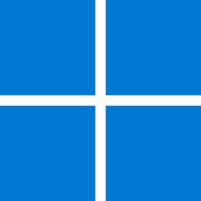

Resources
Hardening checklists and guides for competition day.

Windows Checklist
Harden a Windows image in the right order.
Windows Server Checklist
Secure Server roles, accounts, remote access, and policy.

Debian Checklist
Harden Debian services, SSH, accounts, and packages.
Linux Mint Checklist
Secure Mint desktop settings, accounts, services, and apps.
Linux Checklist
General Linux image checks for users, services, SSH, and firewall.